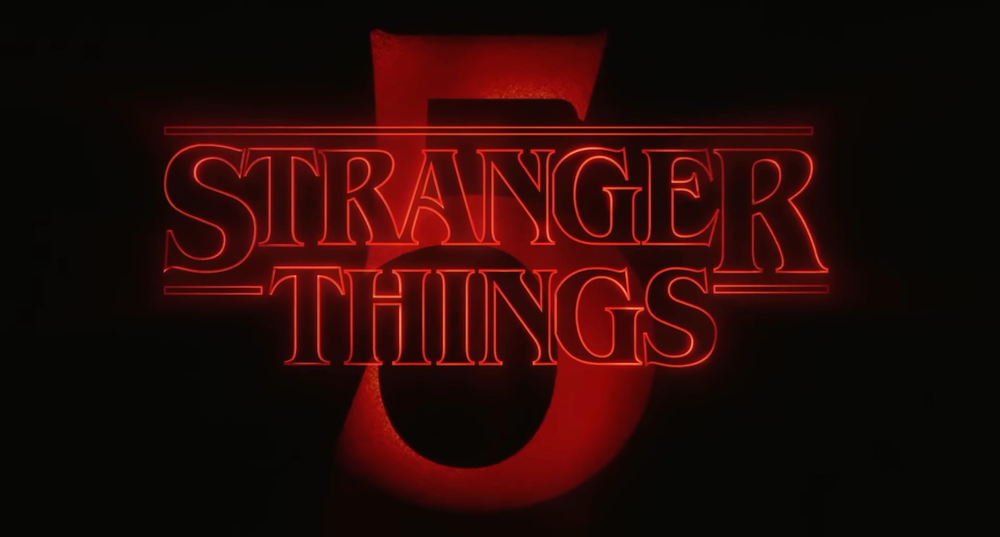
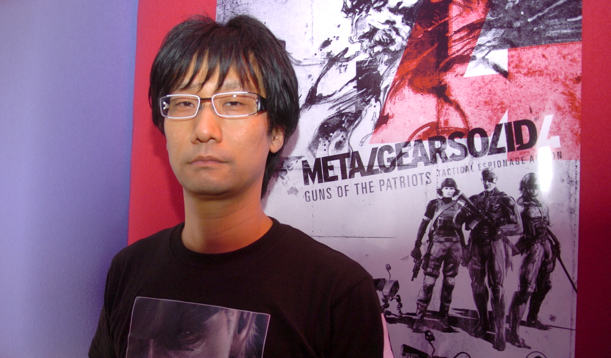

Quest'anno al Lucca Comics erano presenti grandi ospiti: Tetsuo Hara, creatore del manga Ken il Guerriero.

Parte del cast di Stranger Things, che nella giornata di sabato era presente al padiglione Netflix per sponsorizzare l'uscita della 5° stagione della serie.
Caparezza ospite al Cinema Moderno di una puntata del podcast Tintoria.

Hideo Kojima creatore della serie videoludica Metal Gear.
